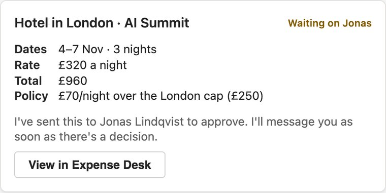

I need to book a hotel in London for the AI Summit, 4 to 7 Nov, around £320 a night.

Ask in Teams
Opens on Teams, centred, in near silence. Amara types her request at a person's pace. The agent replies with the request summary card. The motif enters on the reply.
Ask in Teams.
- Music
- Silence until the reply, then the four-note motif, ending unresolved.
- Sound
- Soft laptop keys (about 10 a second, never one per letter), Enter, a soft paper slide as the card arrives.
- Footage
- Q3Captured in the tenant, or drawn from cards/request-summary.json.